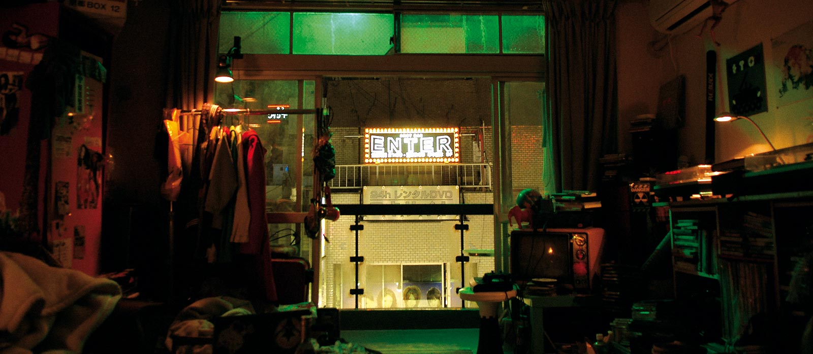
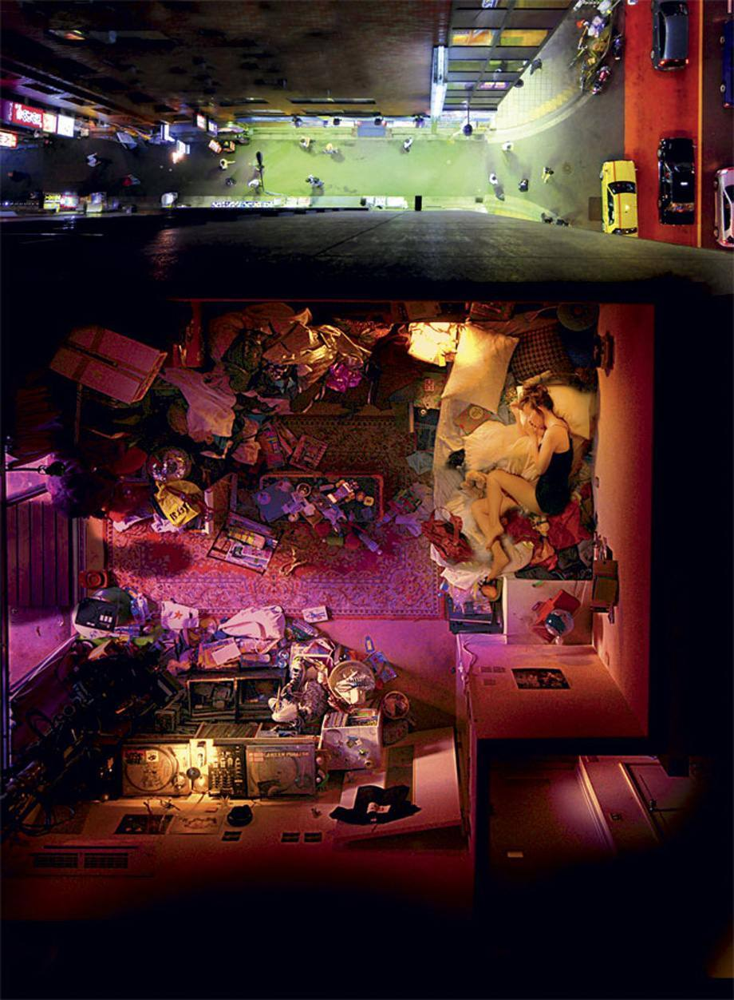

A psychedelic journey into life, death, and the afterlife.
Enter the Void is a mind-bending film by Gaspar Noé that explores the spiritual journey of life, death, and the afterlife, following the experience of a young man in the neon-lit streets of Tokyo. The film uses first-person perspective and vibrant visuals to immerse viewers into a hallucinatory world that transcends time and space.
With its surreal imagery and profound philosophical undertones, "Enter the Void" invites viewers to ponder the mysteries of existence. Noé's signature style of immersive sound and experimental narrative techniques create a truly unique cinematic experience.